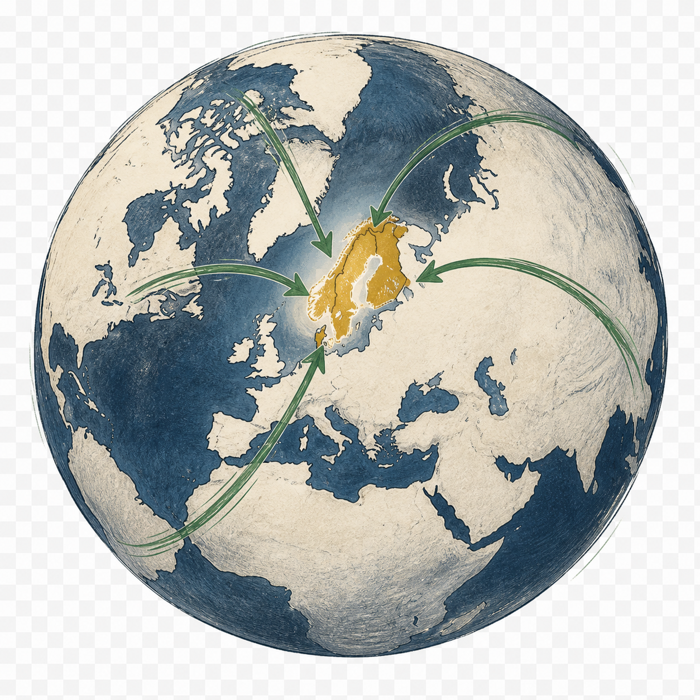

Via en lokal partner
Distributører, forhandlere, agenter eller strategiske samarbejdspartnere, der allerede kender kunderne og markedet.
Nordisk markedsindgang
Waltham hjælper virksomheder med at undersøge, teste og åbne et nyt nordisk marked — med én indgang og de rette lokale specialister bagved.

Marked før administration
Den største risiko ved et nyt marked er sjældent registreringen. Det er at investere i den forkerte vej ind, ansætte for tidligt eller opdage for sent, at kunderne reagerer anderledes end forventet.
Derfor begynder vi med markedet, kunderne og den kommercielle vej. Når der er en reel mulighed at bygge videre på, samler vi den nødvendige hjælp til selskabsform, moms, logistik, lokal kommunikation og drift.
Fem markeder · fem veje ind
Alle fem nordiske lande er blandt verdens ti højest placerede — både på livstilfredshed og lav oplevet offentlig korruption.
Rangeringer: World Happiness Report 2026 og Transparency International Corruption Perceptions Index 2025. Befolkning: 1. januar 2025. Indikatorerne peger på stabile samfund med høj tillid — ikke på, at alle produkter automatisk har et marked.
Gratis førstesjekk
Skriv jeres webadresse. Vi læser den offentlige hjemmeside, måler konkrete forbedringsmuligheder og søger efter dokumenterede markedssignaler.
Tre veje til markedet
Vi begynder ikke med en standardpakke. Vi finder den vej, der kan skabe de første beviser med mindst unødig risiko.
Distributører, forhandlere, agenter eller strategiske samarbejdspartnere, der allerede kender kunderne og markedet.
Vi kortlægger og prioriterer potentielle kunder og udvikler en konkret indgang til de mennesker, der kan købe.
Målgrupper, lokal kommunikation, synlighed, kampagner og en kunderejse, der gør det let at vælge og købe.
Fra mulighed til marked
Virksomhed, produkt, kunder, position og nuværende tilstedeværelse.
Det mest lovende marked og den mest realistiske vej ind.
Konkrete prospects, budskaber, kanaler og et afgrænset markedseksperiment.
Den praktiske struktur og det lokale hold, når potentialet er bevist.
Den proaktive motor
Waltham kan identificere virksomheder med et oplagt nordisk potentiale, undersøge muligheden og gøre den første kontakt konkret. Den første samtale kan derfor begynde med noget, der allerede har værdi.
Illustrativt eksempel — ikke knyttet til en konkret virksomhed.
Aktuel, anonymiseret vurdering
I indledende dialogEn producent henvendte sig med ønske om at finde distributører. Det oplagte svar ville være at begynde at sende produktkataloget rundt. Waltham begynder et andet sted: Hvor kan produkterne reelt have en konkurrencedygtig position — og hvorfor?
Eksemplet viser vores arbejdsmetode. Der er endnu ikke gennemført en markedsanalyse eller dokumenteret et resultat.
Sortiment, produktkvalitet, europæiske certificeringer, leveringstid, minimumsordrer og muligheder for OEM eller private label.
Professionelt fiskeri, akvakultur, landbrug, industri og arbejdsbeklædning vurderes hver for sig — med forskellige kunder og krav.
Hypotesen er, at etablerede nordiske grossister og arbejdstøjsleverandører kan være en stærkere indgang end at bygge et nyt forbrugerbrand fra bunden.
Først når produkt, pris, dokumentation og relevante partnere hænger sammen, giver det mening at investere i en egentlig markedslancering.
Når markedet giver mening
Organisationsnummer, selskabsform, lokale registreringer og ansvar.
VOEC, moms, told, lager, fragt, returadresse, betaling og telefoni.
Kunder, distributører, lokalt budskab, oversættelse, SEO, kampagner og opfølgning.
Forespørg om en samtale
Fortæl kort om virksomheden, markedet og det, I gerne vil opnå. Hvis der er et tydeligt potentiale og et godt match, vender jeg personligt tilbage.